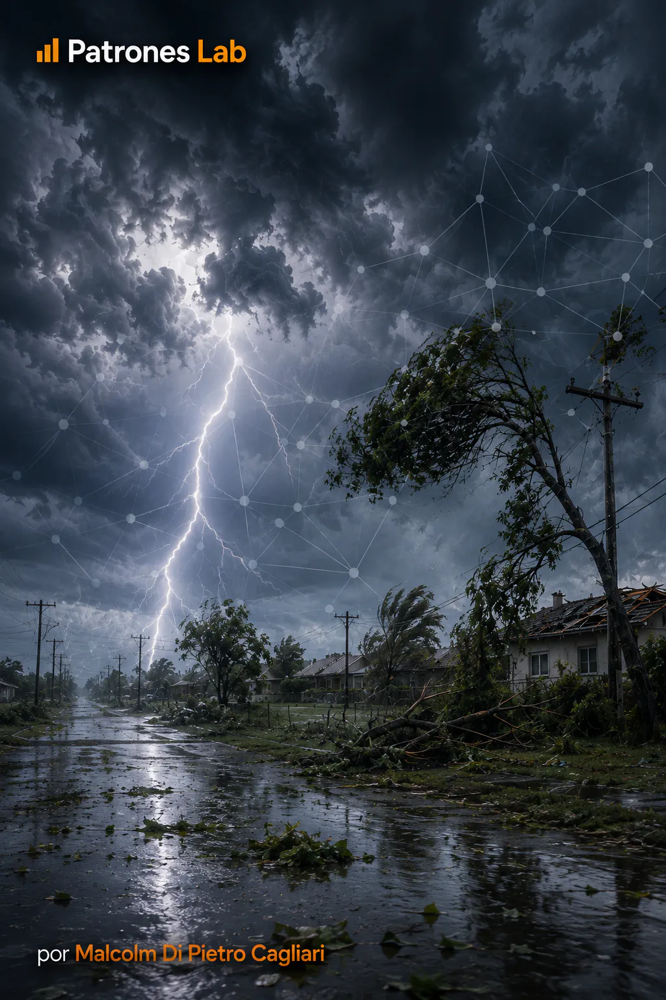

HỌC MÁY · DỰ ÁN 04

Dự án 16 · Học máy
Mạng nơ-ron · Thiệt hại do các hiện tượng thời tiết
Mô hình phân loại áp dụng cho dữ liệu Sự kiện Bão NOAA để ước tính xác suất thiệt hại kinh tế được ghi nhận trong các hiện tượng thời tiết. Dự án xử lý thông tin từ năm 2010 đến năm 2025, so sánh hồi quy logistic và mạng lưới thần kinh, đồng thời đánh giá hiệu suất của nó qua nhiều năm tiếp theo so với hiệu suất được sử dụng cho đào tạo.
BỐI CẢNH VÀ MỤC TIÊU
Dự án sử dụng 1.037.691 sự kiện thời tiết được Sự kiện Bão NOAA ghi lại từ năm 2010 đến năm 2025. Mỗi bản ghi bao gồm thông tin về sự kiện, ngày và địa điểm quan sát được, cũng như các đặc điểm thời tiết và số lượng tài sản và thiệt hại mùa màng khi được báo cáo.
Từ những dữ liệu này, một biến khách quan đã được xác định để xác định các sự kiện có thiệt hại kinh tế được ghi nhận. Phân tích ước tính xác suất xảy ra kết quả đó bằng cách sử dụng thông tin thời gian, lãnh thổ và khí tượng cho từng sự kiện. Để dự đoán phụ thuộc vào những đặc điểm này, số lượng thiệt hại và các biến số khác trực tiếp tiết lộ phản ứng sẽ bị loại khỏi tập hợp các yếu tố dự đoán.
Hai mô hình phân loại có giám sát đã được so sánh. Hồi quy logistic cho phép thiết lập tham chiếu thống kê thông qua các hệ số gắn với các biến; Mạng lưới thần kinh kết hợp tính linh hoạt cao hơn để tìm hiểu mối quan hệ giữa chúng. Các mô hình được đào tạo với dữ liệu từ năm 2010 đến năm 2021, được xác thực cho năm 2022 và 2023 và cuối cùng được đánh giá bằng các sự kiện từ năm 2024 và 2025. Sự phân chia theo thời gian này cho phép đo lường hiệu suất của chúng bằng nhiều bản ghi gần đây hơn những bản ghi được sử dụng để phù hợp với từng mô hình.
MÔ HÌNH VÀ XÁC NHẬN
Chuẩn bị dữ liệu và xác định thiệt hại được ghi lại
Đầu tiên, các tệp Sự kiện Bão NOAA hàng năm đã được tải xuống và tích hợp vào một cơ sở dữ liệu duy nhất. Tên và loại cột, giá trị bị thiếu và tính nhất quán của dữ liệu qua nhiều năm đã được xem xét trước khi chuẩn bị các biến cho mô hình.
Thiệt hại về tài sản và mùa màng xuất hiện trong các tệp ở các đơn vị khác nhau, ví dụ: hàng nghìn hoặc hàng triệu. Chúng được chuyển đổi thành số lượng có thể so sánh được và được thêm vào để tạo thành biến số cho biết liệu mỗi sự kiện có ghi nhận thiệt hại kinh tế hay không.
BIẾN MỤC TIÊU · THIỆT HẠI KINH TẾ ĐƯỢC GHI NHẬN
y_i=\mathbb{1}\left(D_{\text{tài sản},i}+D_{\text{cây trồng},i}>0\right)
Chỉ số này có giá trị 1 khi tổng thiệt hại vật chất và nông nghiệp được ghi nhận lớn hơn 0 và có giá trị 0 trong các trường hợp khác. Để xây dựng nó, số tiền không được báo cáo sẽ được coi là bằng không. Do đó, mô hình xác định các thiệt hại được ghi trong NOAA, không nhất thiết thể hiện tất cả các thiệt hại có thể xảy ra.
Để đưa ra dự đoán, 19 biến nguồn đã được sử dụng: 10 biến số và 9 biến phân loại. Trong số đó có dữ liệu về ngày tháng, địa điểm, loại sự kiện, cường độ và tọa độ. Các chỉ số cũng được tạo ra để chỉ ra những thông tin còn thiếu. Số lượng thiệt hại và các cột tiết lộ trực tiếp kết quả bị loại khỏi các yếu tố dự đoán để mô hình có thể học hỏi từ các đặc điểm của sự kiện.
Phân chia thời gian và chuẩn bị các biến
Hồ sơ được chia theo thứ tự thời gian thành ba bộ: 2010-2021 dành cho đào tạo, 2022-2023 dành cho xác nhận và 2024-2025 dành cho bài kiểm tra cuối cùng. Giai đoạn đầu tiên được sử dụng để ước tính các mô hình; thứ hai, theo dõi hiệu suất của nó trong quá trình phát triển; và phần thứ ba được dành cho việc so sánh cuối cùng trên dữ liệu tiếp theo.
Trước khi huấn luyện các mô hình, một quá trình tiền xử lý chung đã được áp dụng. Trong các biến số, các giá trị còn thiếu được hoàn thành bằng giá trị trung bình của tập huấn luyện và các giá trị được chuẩn hóa để hoạt động với các thang đo tương đương. Các biến phân loại được chuyển đổi bằng cách sử dụng mã hóa one-hot, tạo ra các cột chỉ báo cho các danh mục được quan sát. Quá trình xử lý trước được tinh chỉnh với dữ liệu huấn luyện và sau đó được áp dụng để xác thực và kiểm tra mà không tính toán lại các tham số của nó.
Hồi quy logistic làm mô hình tham chiếu
Hồi quy logistic là mô hình tham chiếu cho phân tích. Trong quá trình huấn luyện, nó ước tính một hệ số cho từng biến được chuyển đổi và kết hợp những đóng góp này thành một điểm tổng hợp xu hướng của sự kiện gây ra thiệt hại đã ghi lại. Dấu của mỗi hệ số cho biết một biến tăng hay giảm điểm đó, giữ cho các điểm khác không đổi; Độ lớn của nó phản ánh tầm quan trọng của sự đóng góp đó trên quy mô của mô hình. Hàm sigmoid biến kết quả thành xác suất trong khoảng từ 0 đến 1.
XÁC SUẤT ƯỚC TÍNH KHẢO CÁO LOGISTIC
\hat{p}_i=\frac{1}{1+e^{-(\beta_0+\sum_j\beta_jx_{ij})}}
Trong phương trình, x đại diện cho các biến sau khi tiền xử lý và β là các hệ số được ước tính từ dữ liệu huấn luyện. Sigma biến đổi tổ hợp tuyến tính thành xác suất thiệt hại kinh tế được ghi nhận trong khoảng từ 0 đến 1.
Quá trình đào tạo bao gồm chính quy hóa L2 để điều chỉnh các hệ số quá lớn và hỗ trợ ước tính ổn định hơn khi làm việc với nhiều biến được chuyển đổi. Do đó, hồi quy logistic cung cấp một điểm so sánh cụ thể: xác suất, thành công và sai sót của nó tương phản với các xác suất, thành công và sai sót của mạng lưới thần kinh trong cùng thời kỳ, để đánh giá mức độ đóng góp của tính linh hoạt cao hơn của mạng lưới thần kinh.
Mạng lưới thần kinh và so sánh kết quả
Với các biến tương tự đã được chuẩn bị sẵn, một mạng lưới thần kinh với các lớp dày đặc đã được huấn luyện. Không giống như hồi quy logistic, mạng kết hợp các tín hiệu ở nhiều giai đoạn bằng cách sử dụng các trọng số mà nó học được trong quá trình đào tạo. Kích hoạt ReLU cho phép bạn nắm bắt các mối quan hệ phi tuyến tính; dropout giúp giảm trang bị quá mức và lớp cuối cùng sử dụng sigmoid để thể hiện dự đoán dưới dạng xác suất thiệt hại được ghi lại.
CHUYỂN ĐỔI TRONG CÁC LỚP ẨN
h^{(l)}=\mathrm{ReLU}\left(W^{(l)}h^{(l-1)}+b^{(l)}\right)
Trong mỗi lớp, trọng số W và độ lệch b biến đổi thông tin nhận được. Chức năng ReLU cho phép mạng tìm hiểu các mối quan hệ không được mô tả bằng sự kết hợp tuyến tính thuần túy.
XÁC SUẤT MẠNG NEURON
\hat{p}_i=\sigma\left(w^\top h_i+b\right)
Lớp cuối cùng áp dụng hàm sigmoid σ cho thông tin mà mạng đã học được và trả về xác suất thiệt hại được ghi lại cho mỗi sự kiện.
Adam được sử dụng để huấn luyện mạng, mạng này điều chỉnh các trọng số dựa trên lỗi mô hình và entropy chéo nhị phân được sử dụng để đo lường sự khác biệt giữa xác suất dự đoán và kết quả quan sát được. Quá trình xác thực theo dõi giúp có thể điều chỉnh tốc độ học tập và ngừng đào tạo khi nó ngừng cải thiện, nhằm hạn chế trang bị quá mức.
MẤT · ENtropy chéo nhị phân
\mathcal{L}=-\frac{1}{n}\sum_{i=1}^{n}\left[y_i\log(\hat{p}_i)+(1-y_i)\log(1-\hat{p}_i)\right]
Entropy chéo so sánh kết quả quan sát được y với xác suất ước tính p̂. Giá trị của nó càng thấp thì xác suất càng phù hợp với kết quả thực tế.
So sánh cuối cùng được thực hiện với ROC AUC và PR AUC, nhằm đánh giá mức độ phân biệt giữa các sự kiện thiệt hại được ghi lại với các sự kiện thiệt hại khác. PR AUC đặc biệt quan trọng vì các sự kiện gây thiệt hại tích cực ít xảy ra hơn. Các ma trận chính xác, thu hồi, F1 và nhầm lẫn cũng được tính toán để xem xét có bao nhiêu trường hợp dương tính mà mỗi mô hình phát hiện và có bao nhiêu cảnh báo là chính xác.
ĐỘ CHÍNH XÁC VÀ PHỤC HỒI SỰ KIỆN BỊ HƯ HỎNG
\mathrm{Precision}=\frac{VP}{VP+FP}
\mathrm{Recall}=\frac{VP}{VP+FN}
VP là những trường hợp có hư hỏng mà mô hình phát hiện chính xác; FP, cảnh báo sự kiện tích cực không có thiệt hại nào được ghi nhận; và FN, những trường hợp có hư hỏng mà mô hình không xác định được. Độ chính xác đo lường tỷ lệ cảnh báo tích cực là chính xác và thu hồi đo lường tỷ lệ các sự kiện gây thiệt hại mà nó có thể phát hiện được.
KẾT QUẢ VÀ BÀI HỌC
Trong thử nghiệm cuối cùng với các sự kiện 2024-2025, mạng thần kinh đã đạt được ROC AUC là 0,9324 và PR AUC là 0,8004. Hồi quy logistic lần lượt đạt 0,8961 và 0,6691. Mạng lưới thần kinh có khả năng phân biệt các sự kiện có thiệt hại được ghi lại tốt hơn, với lợi thế đặc biệt rõ ràng về PR AUC.
Bằng cách chỉ quan sát các sự kiện có thiệt hại được ghi lại, mạng lưới thần kinh đã đạt được độ chính xác là 0,7942, mức thu hồi là 0,6243 và F1 là 0,6991. Hồi quy logistic thu được 0,7580, 0,5023 và 0,6042. Về mặt thực tế, mạng lưới thần kinh đã xác định tỷ lệ các sự kiện đó cao hơn và duy trì độ chính xác cao hơn trong các cảnh báo tích cực của nó.
CHỈ SỐ F1 · CÂN BẰNG GIỮA CHÍNH XÁC VÀ THU HỒI
F_1=2\,\frac{\mathrm{Precision}\cdot\mathrm{Recall}}{\mathrm{Precision}+\mathrm{Recall}}
F1 kết hợp độ chính xác và thu hồi trong một chỉ báo duy nhất. Nó được sử dụng để so sánh các mô hình khi điều quan trọng là phải phát hiện lớp tích cực, đồng thời, tránh có quá nhiều cảnh báo không chính xác.
Việc so sánh cung cấp xác suất ước tính cho mỗi sự kiện, dự đoán từ cả hai mô hình, ma trận nhầm lẫn, số liệu so sánh và biểu đồ huấn luyện. Quá trình tiền xử lý và mô hình được giữ nguyên để áp dụng cùng tiêu chí cho các bản ghi mới có cùng biến. Khi dữ liệu từ những năm tiếp theo được kết hợp, các dự đoán của nó có thể được so sánh với thiệt hại được ghi lại để kiểm tra xem liệu hiệu suất có được duy trì hay không hoặc liệu có nên đào tạo lại hay không.